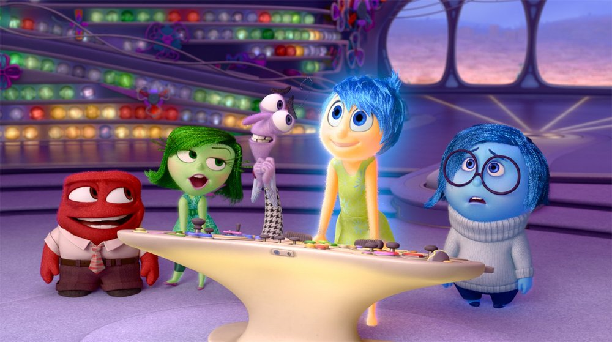

INSIDE OUT · 腦內總部
拖曳旋轉✦點選入口也可用方向鍵轉動球體
開啟 JavaScript 即可轉動回憶球並閱讀各章節。
01 THE EMOTIONS
點選角色，看看每一種情緒會在什麼時候出現。
JOY · 快樂
樂樂擅長在日常裡找出值得開心的事。到了陌生的地方，她會先想，有沒有什麼新的事可以期待？
開啟 JavaScript 即可使用角色切換、回憶實驗與測驗。
02 THE STORY
從冰球場走到新教室，再回到家裡。點選分鏡，看看同一顆回憶球如何一路變色。以下包含電影劇情。
開心 × 歸屬感
搬家以前，萊莉常和隊友一起打冰球。想到熟悉的冰場和一起練球的朋友，她覺得開心，也知道自己在這裡有個位置。
她在意的是和隊友一起打球的時光。先記住這個線索，再看看搬家後哪裡變了。

從電影裡找線索
樂樂一開始努力讓萊莉保持開心。當萊莉說出自己想家，憂憂也讓家人聽見了她的需要。回想這段故事，你覺得五位角色中，誰最容易被忽略？
03 MEMORY MIXER
這裡會接續你選的分鏡。切換回想的時刻，比較球的顏色和萊莉在意的事。
沿用故事分鏡 · 冰球回憶
金色 · 開心
和隊友一起在冰上奔跑，讓萊莉覺得自己是球隊的一分子。這時，開心最明顯。
她此刻在意的是 和隊友一起努力、一起玩。
04 FIELD MISSIONS
每個任務有三條分支。試過同一個任務的兩種回應，就能比較它們帶來的心情變化。
事件紀錄
新班級的第一個午休，大家已經坐成一圈。你看到旁邊還有空位，想過去，又怕打擾他們。
開始的心情 · 緊張 ＋ 期待
接下來可能發生
開啟 JavaScript 即可選擇故事分支。
ROUTE COMPARISON
左右滑動可看其他路線
05 EMOTION LAB
選一個生活情境，或用自己的經驗調出一顆心情球。試著替感受取個名字。
兩種可能的感受
你期待認識新朋友，也會擔心下課時沒有人可以說話。
如果旁邊也有人看起來很緊張，你會用哪一句話開頭？
互動調色盤
選一到兩種感受。選了兩種，就能調整哪一種更明顯。
想想今天發生的一件事，再選出最貼近當時的感受。
01 · 察覺
上臺前心跳很快。也許我很緊張，也有點期待。
02 · 命名
「我怕忘詞，也很想把準備好的內容分享給大家。」
03 · 回應
「可以聽我練習一次開場嗎？」先從一個做得到的小動作開始。
06 HEADQUARTERS QUIZ
從萊莉的故事到你的日常，共 10 題。選完會立刻看到解析。
開啟 JavaScript 後就能開始測驗。